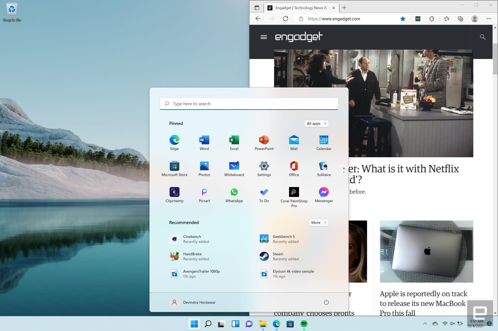

Information available about "Window 12." It's possible that a new version of the Windows operating system has been released since then, but I don't have details about any developments beyond that date.
As of 2022, the latest version of the Windows operating system was Windows 11, which introduced several new features and improvements over its predecessor, Windows 10. Some of the notable features in Windows 11 included:
1. Redesigned Start Menu:
Windows 11 featured a centered Start Menu, providing a more streamlined and modern look.
2. Taskbar Improvements:
The taskbar received a makeover, including the placement of icons at the center by default. Snap Layouts and Snap Groups: Enhanced window management features, allowing users to easily organize and snap applications into different layouts.
3. Virtual Desktops:
Improved virtual desktop experience with new customization options.
4. Microsoft Store Redesign:
The Microsoft Store received a visual overhaul, making it more user-friendly.
5. Direct integration with Microsoft Teams:
Windows 11 integrated Microsoft Teams directly into the taskbar for seamless communication.
6. Gaming Improvements:
Windows 11 introduced technologies like DirectStorage and Auto HDR to enhance the gaming experience.
7. Widgets:
A new Widgets feature was introduced, providing personalized news, weather, calendar, and other at-a-glance information.

All copyright©